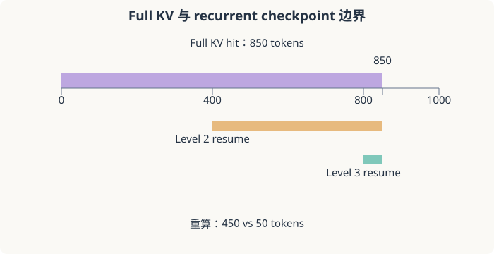
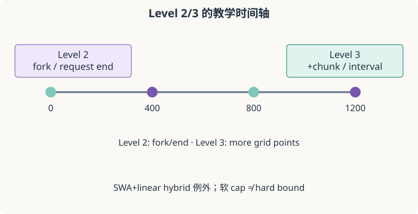

第 53 章 · SGLang 内核与存储
Hybrid Cache Checkpoints：Level 2/3、分叉与 Recurrent State 恢复
Full KV 命中更长前缀时，为什么 recurrent-state checkpoint 仍可能限制实际可复用长度？
Full KV 命中更长前缀时，为什么 recurrent-state checkpoint 仍可能限制实际可复用长度？
1. Hybrid 模型为什么需要 checkpoint
Attention 层可缓存每 token 的 K/V；Mamba/GDN/KDA 等 recurrent 层用状态 s_t=f(s_{t−1},x_t)。不能用后面的 state 直接回到任意中间位置；实际 reuse 需要该边界的 Full KV 和可用 recurrent state，若有 SWA 还需对应 window 约束。
2. 状态与 KV 命中边界
教学 full KV 命中850 tokens，可用 state checkpoints={0,400,1000}，则最多恢复400（1000 超过命中边界），重算450 tokens 才到850。若 level3 增加800，重算50。真实缓存还需验证对齐、host load、容量和其它 components。

3. Level 2 与 Level 3
固定文档 Level2 默认在 fork/request end 保存（PD prefill 为 prompt end），软目标一 checkpoint/path；Level3 另保存每个 prefill chunk 和每 mamba-track-interval decode tokens。SWA+linear-attention hybrid 在 level2 仍按 chunk checkpoint。普通 level2 请求可推迟中间树发布，影响并发 sharing。

4. 重算和容量模型
令 K 为完整 KV hit 长度，C 是不超过 K 的可用 checkpoint 集合，教学 reusable prefix=max(C∪{0})；重算 K−reusable（仅指原本命中的 KV 区间；完整请求还要计算 K 之后的新 tokens）。若每 state 2 MiB，10 paths 各保留1或4 states，则20或80 MiB（不含 running/locked slots）。per-path cap 是 pruning target，不是硬容量上限。
5. 分叉与 copy-on-write
MambaComponent 从完整 KV 与 state boundary 推导对齐的 branching_seqlen；新分叉 checkpoint 后续可帮助 sibling，但当前请求可能仍需重算。恢复时 copy-on-write into per-request slot，不能直接修改共享 state；host-only 与 backed state 的可用性需按组件判断。
6. 资源管理与 HiCache
checkpoint 发布可产生 host/storage write，level2 减少中间状态但不保证 hit rate 提高。locked、fork、tail 和 device leaf 可超过软 cap；状态池需包含 running request、保留 checkpoints、draft 和临时恢复。state_cost 淘汰另见43。
7. 真实评估
对 continuation-heavy 和 late-fork workload 分别比较 reusable prefix、recompute tokens、host write bytes、state occupancy、p95 TTFT。官方文档中的模型与 trace 数据是特定实验，不能外推。本实验只计算离散 checkpoint 边界。
8. 交互：逐步检查机制
Hybrid Checkpoints 教学实验
Level 2：K=850，checkpoint 400/1000；恢复400，重算450。
Level 3：增加800；恢复800，重算50。
状态被淘汰：800 不可用则回退400；更多 checkpoint 不保证可用。
教学模型仅验证机制与反例，不代表实测性能。
9. CPU 最小实验
hybrid_checkpoint_reuse.py 使用 Python 标准库，可独立执行。
python3 examples/hybrid_checkpoint_reuse.py不执行实际 GPU、网络、云存储或集群操作。
10. 源码阅读路线与证据
固定上游快照 0fde0356cc44bca9a7727a3a2e2c2d10cd5bd30f，区分实现、推导与教学示例。
- Level table / What level 2 changes：Level 2 keeps divergence/request-end checkpoints; level 3 also keeps chunk and interval checkpoints, with SWA exception.
- create_match_validator / finalize_match_result_in_tree_core：Mamba checkpoint boundary can be shorter than full-KV hit; host-backed state affects load-back.
- finalize_match_result_in_cache：Copy-on-write state is staged for request-local use.
- _evict_excess_path_states：Path state pruning is a target; retained checkpoints are not hard bounded by it.
前置章节：第 7 章 · 第 13 章 · 第 32 章 · 第 38 章 · 第 39 章 · 第 43 章。证据清单。